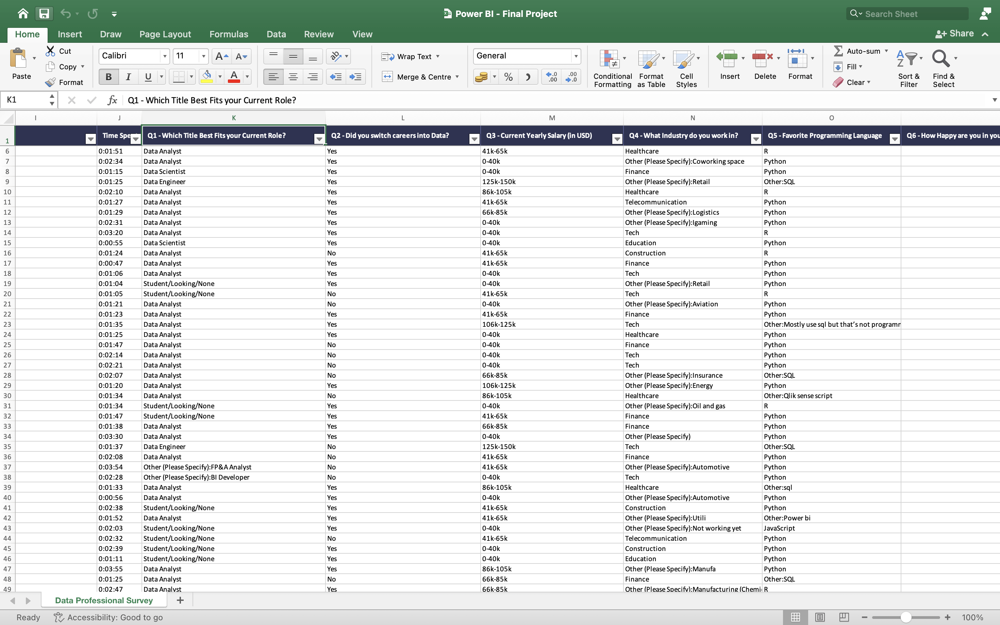
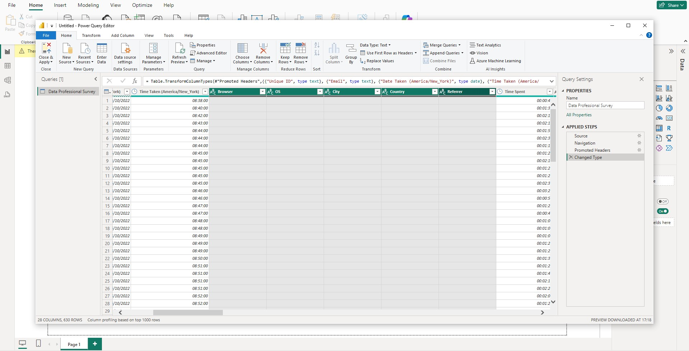

Insights into the Careers of Data Professionals Using Power BI
In this project, I leveraged Power BI to cleanse, transform, and visualize a sample dataset from a survey of data professionals to extract some interesting insights.

Data Professional Survey - Dataset Overview
This dataset was a survey of data professionals that collects detailed information on various aspects of their careers, demographics, and job satisfaction. Key attributes include:
1. Job Satisfaction:
Ratings on how happy respondents are in their current position with respect to management, upward mobility, and other job factors.
2. Breaking into Data:
Responses on how difficult it was for them to enter the field of data.
3. Job Preferences:
Preferences for new job opportunities, such as the importance of remote work, salary, and work-life balance.
4. Demographics:
Information about gender, age, country of residence, education level, and ethnicity.
The dataset provides insights into the experiences and challenges faced by data professionals in their careers, along with their preferences for job features and career progression.
Data Transformation and Visualization Process
I worked with a survey dataset of over 600 data professionals, which I transformed and visualized using Power BI.
1. Data Cleansing and Transformation:
I began by importing the raw dataset into Power Query. The data was initially messy and contained irrelevant columns, so I cleansed it by removing unnecessary information and ensuring the focus remained on relevant metrics.
2. Data Standardization:
To ensure the dataset was ready for analysis, I converted and updated data types where necessary, making the columns usable for accurate and dynamic visualization.
3. Visual Insights:
After preparing the data, I explored various visualizations to uncover hidden trends and patterns. I leveraged:
- Cards to present key statistics at a glance.
- Stacked Bar Charts and Stacked Column Charts to compare data across different categories.
- Donut Charts to represent proportions and distribution.
- Treemaps to visualize hierarchical data with an intuitive, space-efficient layout.
The Geographic Distribution of Participants shows that the majority of respondents come from the United States, followed closely by India and other countries. This global representation reflects the widespread reach of the data field, where professionals from all corners of the world contribute to this ever-growing industry.
When we look at Average Salaries by Job Title, it becomes clear that Data Scientists lead the way, earning the highest average salaries. Following close behind are Data Engineers and Data Architects, both highly technical roles. Interestingly, Data Analysts, who often represent the entry point for many professionals, still earn respectable salaries despite being on the lower end of the scale. This illustrates the rewarding nature of technical roles in the field of data.
Breaking into data analysis, however, is not always a smooth journey. The Difficulty to Break Into Data Analysis visualization shows that nearly 42% of respondents found it neither too easy nor too difficult. However, a significant percentage found it easy, while about 7% marked the journey as "very difficult." These figures tell a story of determination and varying levels of challenge, where each individual has a unique path into the field.
Job Satisfaction among data professionals is a mixed bag. The survey shows that, on average, they are moderately happy with their work-life balance, scoring 5.74 out of 10. However, their Happiness with Salary scores slightly lower at 4.27 out of 10, indicating that while the profession offers flexibility and good compensation, some feel underpaid relative to their contributions and skill levels.
One of the most interesting findings is the dominance of Python as the Favourite Programming Language among data professionals. It is favored by a significant margin, with R and other languages trailing far behind. Python’s simplicity and versatility have clearly cemented its place as the go-to language in data science, making it an invaluable tool in the arsenal of any data professional.
Conclusion:
The story that emerges from this data is one of diversity, resilience, and opportunity. Data professionals come from all over the world and face varying challenges in breaking into the field. While their work can be rewarding—especially for those in technical roles like Data Scientists and Engineers—there remains room for improvement in terms of job satisfaction and salary.
This project has provided valuable insights into the lives and experiences of data professionals, revealing trends that can help inform both individuals and organizations about the opportunities and challenges in the world of data. Through powerful visualizations, I’ve been able to turn raw data into a compelling narrative that speaks to the heart of the modern data professional’s journey.